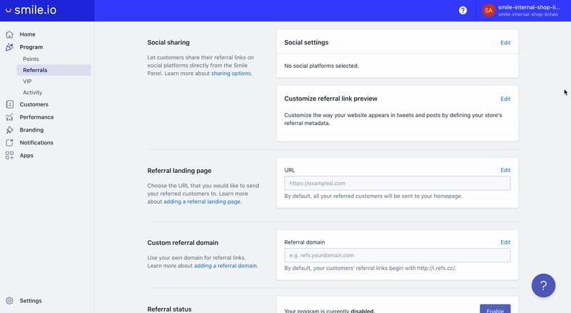
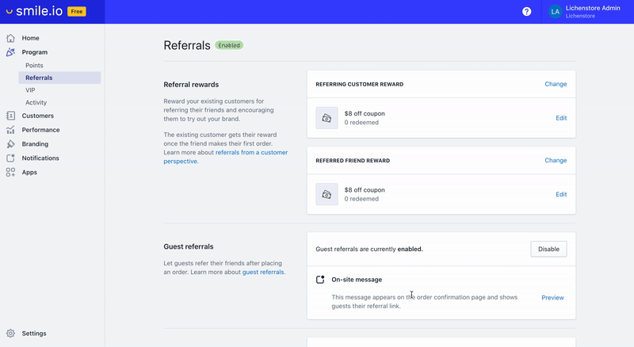
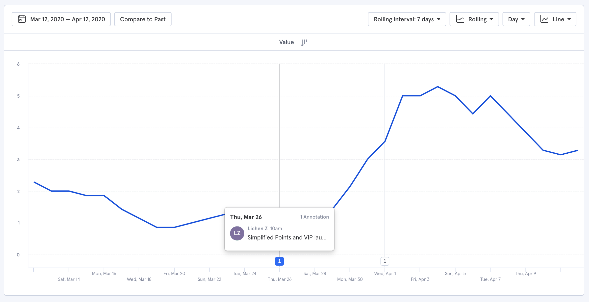

Clarity over simplicity: redesigning how merchants configure their loyalty programs
The problem
Merchants found it difficult to their configure their reward programs. This increased support tickets, reduced the value of Smile, and decreased the likelihood of merchants converting from free to paid plans.
Our goal was to improve discoverability and make reward programs easier for merchants to configure.
After talking to merchants through support chats and hearing merchant struggles from our customer success and support team, I found that there were two primary reasons why merchants found it difficult to configure their program.
- They didn't understand what several settings did
- They couldn't find or return back to where certain settings belonged
I was the sole designer on the team along with a front-end developer. 🙌
What does program configuration involve?
Merchants went to the program link in the left navigation bar to configure settings for their rewards programs, including Points, Referrals, and VIP.
These three lay the foundation of a rewards program and their configuration is the first step that a merchant must complete before they launch their program. Hence, it's critical for merchants to understand where to find them and what they do.
Flattening the information hierarchy
The first significant decision we made was to flatten the information hierarchy. This would bring forward program functionalities that would have been hidden behind icons. By exposing these functionalities, the information architecture would be more intuitive for merchants and improve discoverability.
Here is the old vs. the new Program information architecture:

To give you an idea of how we did this for each program (Points, Referrals, and VIP), here are the before and after shots of the Points program page.
Before (here the information is divided between 3 pages)
After (here the information is combined into a single-page, settings layout)

Adding complexity for clarity
All in all, the interface of the programs felt too reductive in its representation of their configuration. Some functionalities are inherently more difficult to explain to merchants than others. The program settings lacked pertinent information that we assumed merchants would know. This led to our support team to answer several of the same questions.
- Old VIP settings: VIP is one of the most complex to set up. In fact, this section took the longest for our customer success representatives to explain to merchants because there was so much confusion around how it worked.

- New VIP settings: here, I opted to use natural language to describe the settings merchants chose so that they're more contextual and easier to understand at a glance.

It was important to get the language here as informative yet concise as possible. Several iterations with the customer success and support team took place before we arrived at the final copy. By offering the additional guidance, we can help merchants feel more confident about taking the next big step: launching their program.
Improving feature discoverability and usage
Points expiry is an effective way to help merchant to re-engage customers. Despite the benefits of the feature, few merchants knew about or used the feature because it was difficult to find and it's benefit wasn't made immediately clear.

By progressively disclosing information as merchants needed them, I was able to condense several functionalities while adding in more description to show how they worked and what their benefits were.
Offering sample content for a quick start
Some settings may look intimidating for new merchants simply because they don't know where to start. Program configuration also relies heavily on merchant creativity. To remedy this, I added sample content in empty states to reduce user paralysis and to provide a bit of inspiration. It also helps merchants visualize how their creations will look like to their customers.


Showing merchants what's possible on paid plans
Merchants frequently ask for features that already exist. By showing merchants all the features we have to offer at the right places, we can help them discover features that they would find valuable or that they might consider in the future as their businesses grow. One example is our VIP program which is only available in a paid plan. However, most merchants didn't know about it because it didn't appear until they upgraded. By showing VIP in a splash page, we expect to see an increase in interest towards the program and greater plan upgrades.
New program splash pages:
Here, we introduce to merchants the features that are available in higher paid plans.

What we shipped
After nailing down the program configuration pages and validating the direction with early user research, I polished up the interaction details and interface.
Here are the final result ✨:
- Points:
- Referrals: 
- VIP:

Early results
Curious about how the new design performs in terms of improving feature usage, generating conversions, and decreasing support tickets, I carefully monitored conversations for feedback from merchants in support chats and by using Mixpanel events. Before we started on the project, I create Mixpanel events to establish a baseline for current feature usage. In some cases, I used component interactions as a proxy for measuring feature usage. Here are some examples of the Mixpanel events used in Referrals.

Just a few days after the new Points page was launched, we saw an immediate increase in the number of merchants using points expiry. More than twice as many merchants had enabled the feature.
This project is on-going and scheduled for completion over the next month. More updates to come :)